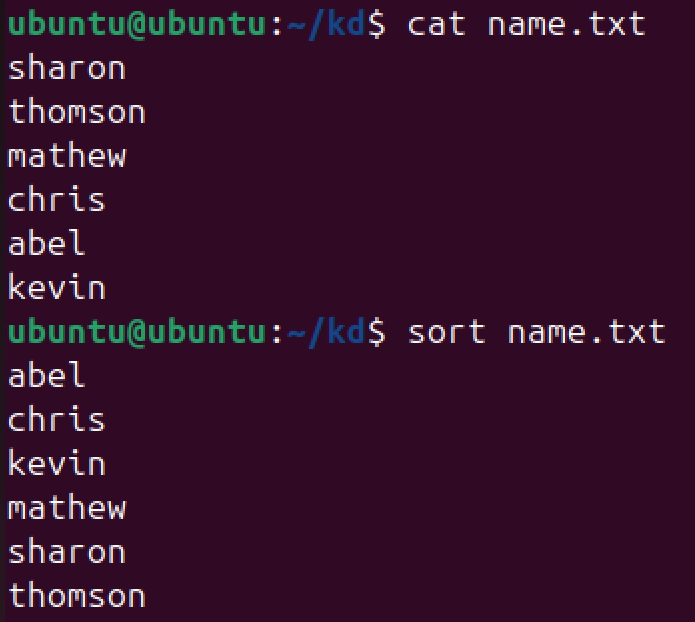
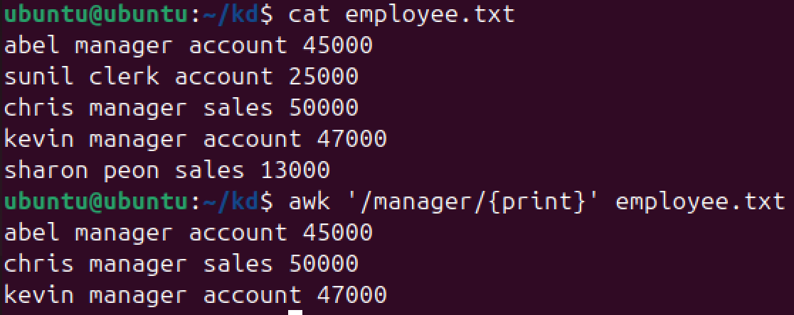
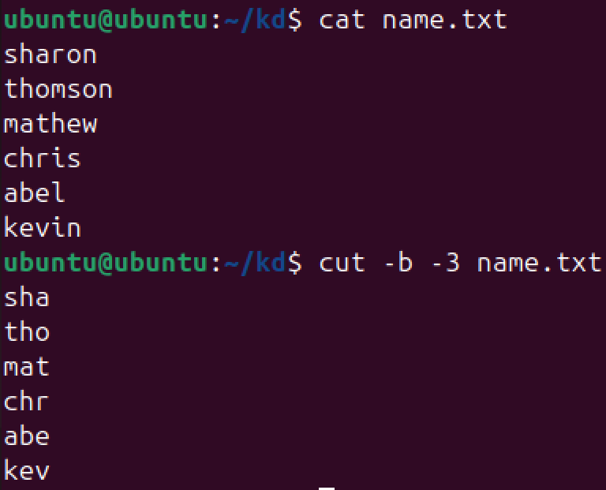
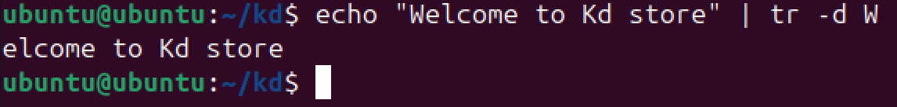
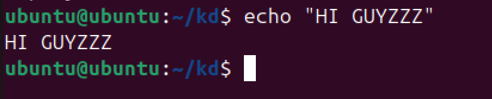
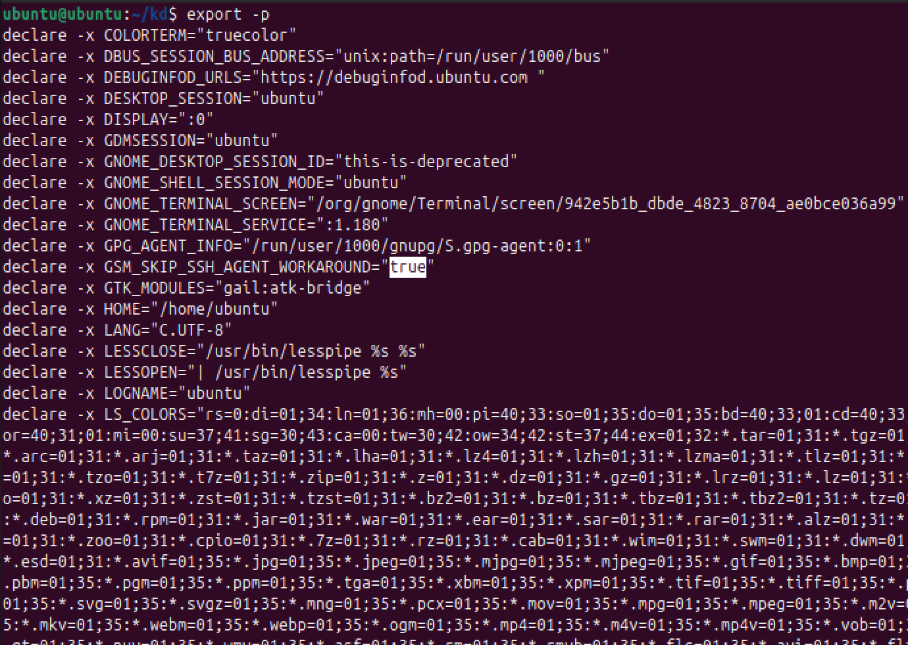
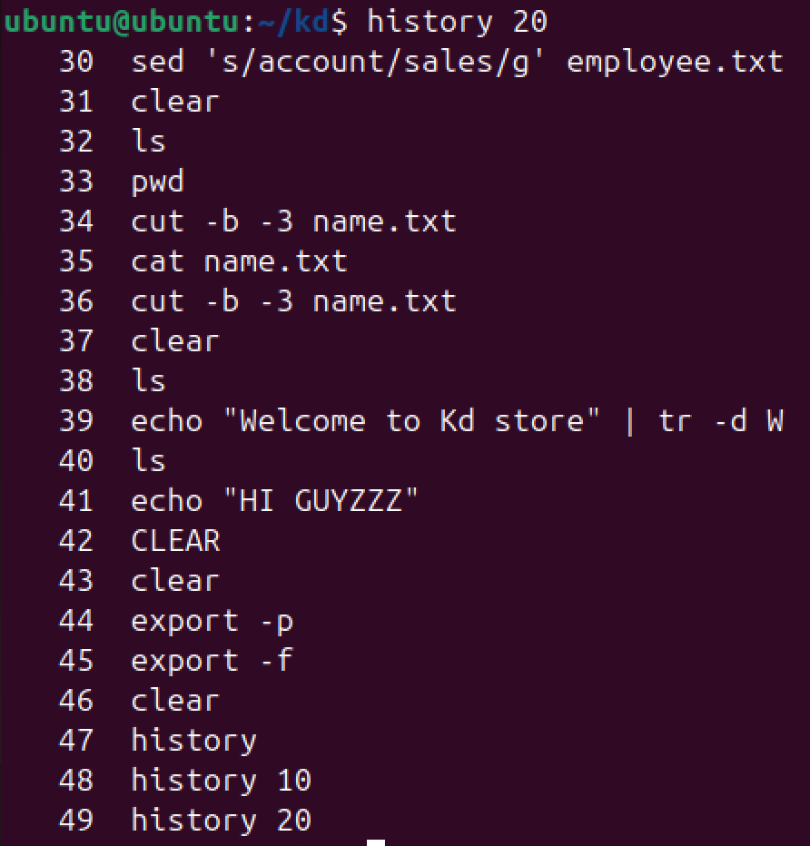
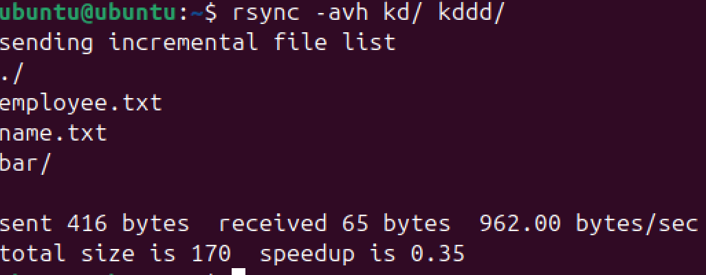
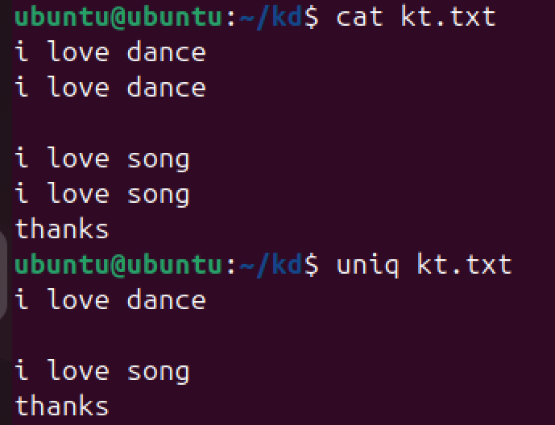

sort Command
Description: The sort command sorts lines of text files.
Purpose: Organizes data alphabetically, numerically, or by other criteria.
Usage: sort [options] file.txt
Example:
awk Command
Description: The awk command processes and analyzes text files.
Purpose: Allows pattern scanning and text manipulation.
Usage: awk 'pattern {action}' file.txt
Example:
sed Command
Description: The sed command is used for stream editing and modifying files.
Purpose: Can perform operations like find and replace on text files.
Usage: sed 's/old/new/g' file.txt
Example:

cut Command
Description: The cut command removes sections from each line of files.
Purpose: Used to extract specific columns or fields from a file.
Usage: cut -d ' ' -f 1 file.txt
Example:
tr Command
Description: The tr command translates or deletes characters from the input.
Purpose: Can be used for character substitution or removing characters from the input.
Usage: tr 'a-z' 'A-Z'
Example:
echo Command
Description: The echo command is used to display a line of text or a variable's value.
Purpose: Output text or variables to the terminal or a file.
Usage: echo [text]
Example:
export Command
Description: The export command sets environment variables.
Purpose: Sets variables that can be accessed by processes spawned from the shell.
Usage: export VARIABLE_NAME=value
Example:
history Command
Description: The history command displays the history of commands executed in the current session.
Purpose: View and reuse previously executed commands.
Usage: history
Example:
rsync Command
Description: The rsync command synchronizes files and directories between two locations.
Purpose: Efficiently copies files between systems, supporting incremental backups.
Usage: rsync -av source destination
Example:
screen Command
Description: The screen command allows for managing multiple terminal sessions.
Purpose: Enables session management, especially useful for long-running tasks.
Usage: screen
Example:

uniq Command
Description: The uniq command filters adjacent matching lines from input.
Purpose: Removes duplicate lines from a file or input stream.
Usage: uniq file.txt
Example:
